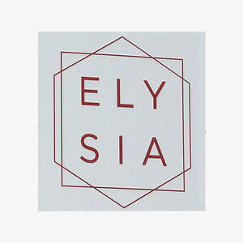

Trade Mark Journal No.2025/021 23 May 2025
UK00004202182 12 May 2025 (3)

- Class 3
- Perfumes; Fragrances; Oils for perfumes and scents; Perfumery and fragrances; Perfume; Aromatics for perfumes; Potpourris [fragrances]; Perfume oils; Liquid perfumes; Perfumes for ceramics; Aromatics for fragrances; Colognes; Extracts of perfumes; Scents; Fragrances for automobiles; Extracts of flowers [perfumes]; Flowers (Extracts of -) [perfumes]; Extracts of flowers being perfumes; Natural oils for perfumes; Musk [perfumery]; Fragrance sachets; Perfumes for cardboard; Perfumeries; Perfumery; Perfumery products; Household fragrances; Amber [perfume]; Solid perfumes; Deodorants for personal use [perfumery]; Cedarwood perfumery; Body deodorants [perfumery]; Perfume oils for the manufacture of cosmetic preparations; Body fragrances; Perfumed potpourris; Perfumed soaps; Aftershave lotions; Aftershaves; Fumigation preparations [perfumes]; Cologne; Room perfume sprays; Ionone [perfumery]; Fragrance preparations; Room fragrances; Perfume water; Perfumed creams; Perfumed sachets; After-shave lotions; Scented soaps; Fragrance emitting wicks for room fragrance; Scented oils; Fragrance refills for non-electric room fragrance dispensers; Essences for fragrancing; Synthetic perfumery; Fragrance sachets for eye pillows; Perfumed powders [for cosmetic use]; Vanilla perfumery; Perfumed powders; Synthetic vanillin [perfumery]; Aftershave balms; After-sun oils [cosmetics]; Perfumed lotions [toilet preparations]; Aromatherapy lotions; Perfuming sachets; Ethereal oils for fragrancing; Scented body lotions and creams; Mint for perfumery; Moisturisers [cosmetics]; Scented sachets; Skin fresheners [cosmetics]; Scented body lotions; Scented linen sprays; Geraniol for fragrancing; Suntan oils [cosmetics]; Scented water for fragrancing; Air fragrance preparations; Tanning oils [cosmetics]; Geraniol fragrancing compounds; Aftershave creams; Room perfumes in spray form; Perfumes for industrial purposes; Roll-on deodorants [toiletries]; Feminine deodorant sprays; Perfumed soap; Sachets for perfuming linen; Linen (Sachets for perfuming -); Cosmetics; After-shave balms; Peppermint oil [perfumery]; Pomanders [aromatic substances]; Perfumed body lotions [toilet preparations]; Essential oils as perfume for laundry purposes; Natural perfumery; Aromatic potpourris; Fragrances for personal use; Eau de cologne [cologne water]; Incense sachets; Fragrant sachets; Cosmetics in the form of lotions; Skincare cosmetics; Beauty lotions; Agarwood [incense]; Air fragrance reed diffusers; Scented body creams; Eau de colognes; Aftershave; After-shave creams; Suncare lotions.
YSF GROUP HOLDINGS LTD